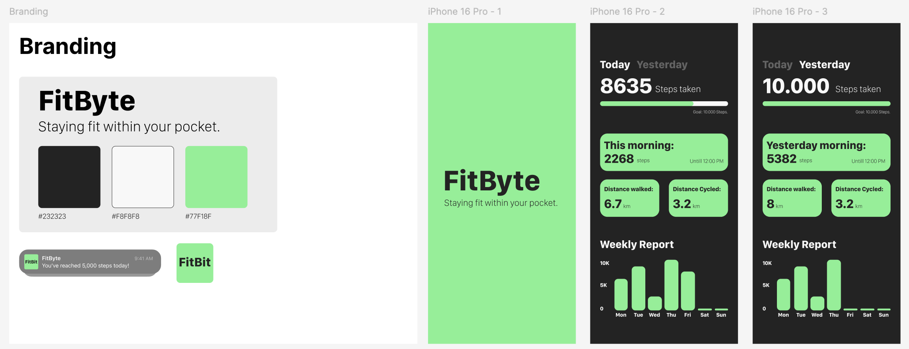

FitByte:
The first app I designed and coded was my app called "FitByte", which is a working pedometer. The app counts your steps while it is in your pocket.

This project was a really enjoyable way to begin my app development journey. I faced a few challenges along the way, but each one taught me something new and valuable. By the end, I not only had a working app but also a much deeper understanding of how everything fits together.